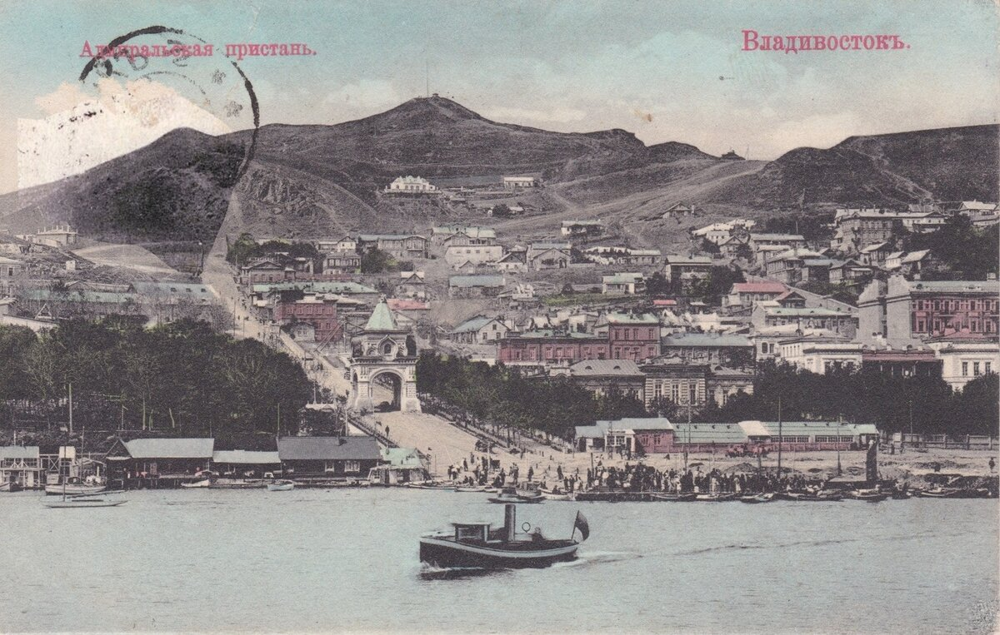
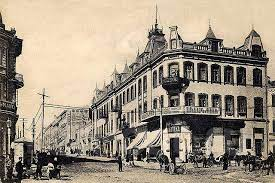
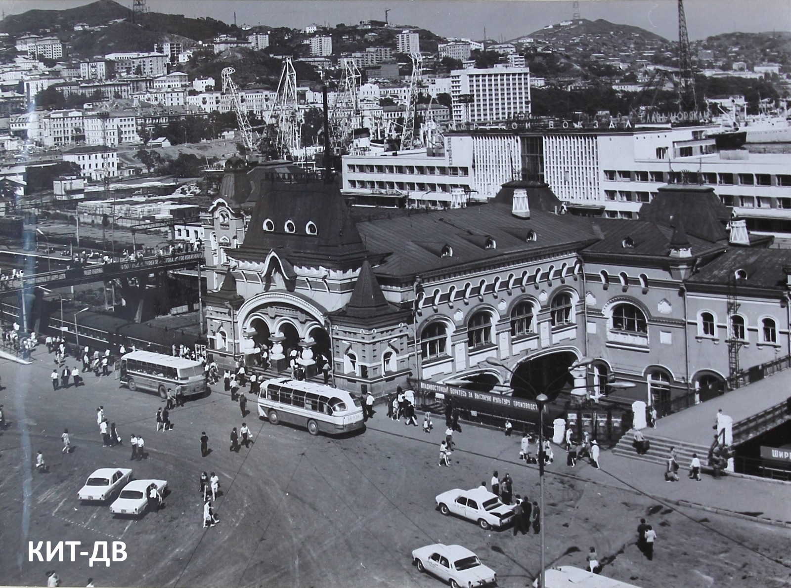

Первоначально территория Владивостока принадлежала кочевым монгольским племеням – киданям, затем постепенно перешла во владения чжурчжэням, там располагалось их государство – Ся. Однако после татарско-монгольского нашествия все, что там располагалось было разрушено, и край стал безлюдным и не упоминался до 19 века. В 1860 году на берегу Золотой Рог, командой парусника «Маньчжур», был основан военный пост с названием “Владивосток”. Лишь через 20 лет Владивосток получил статус города и началась застройка местности, зарождение промышленности. Территория Владивостока начала расширяться с застройкой и стала включать в себя полуостров Муравьева-Амурского и остров Русский.

В Советское время город был в упадке, и был разграблен, после русско-японской войны. Правительством был принят план “восстановительной трехлетки” в городе,в ходе которого была возобновлена деятельность торгового порта. С 1 января 1952 года во Владивостоке был введен особый режим, в ходе которого город стал закрытым для посещения иностранцами, таким образом предполагалось убрать из города иностранные консульства, торговый и рыбный флот, а все органы краевой власти перенести в Уссурийск, но эти планы не были реализованы. При власти Никиты Сергеевича Хрущева город получил особое внимание, и впервые был посещен им в 1954 году, чтобы решить стоит ли закрепить за Владивостоком статус закрытой военно-морской базы. Однако остаточное решение насчет этого вопроса было принято по повторному приезду Хрущева в город в 1959 году, итогом этого стало постановление о развитии Владивостока.Затем в 60-е началась постройка новой трамвайной линии, город стал преображаться от многочисленных новых строек.

На сегодняшний день Владивосток является развивающимся городом, крупным промышленным и культурным центром на Дальнем Востоке. В городе 4 театра и более 30 музеев, а приморская картинная галерея обладает коллекциями русской, советской и зарубежной живописи. А в 2013 году в Владивостоке был открыт Приморский театр оперы и балета, с одним из лучших технических оснащений и акустической системы в России.
